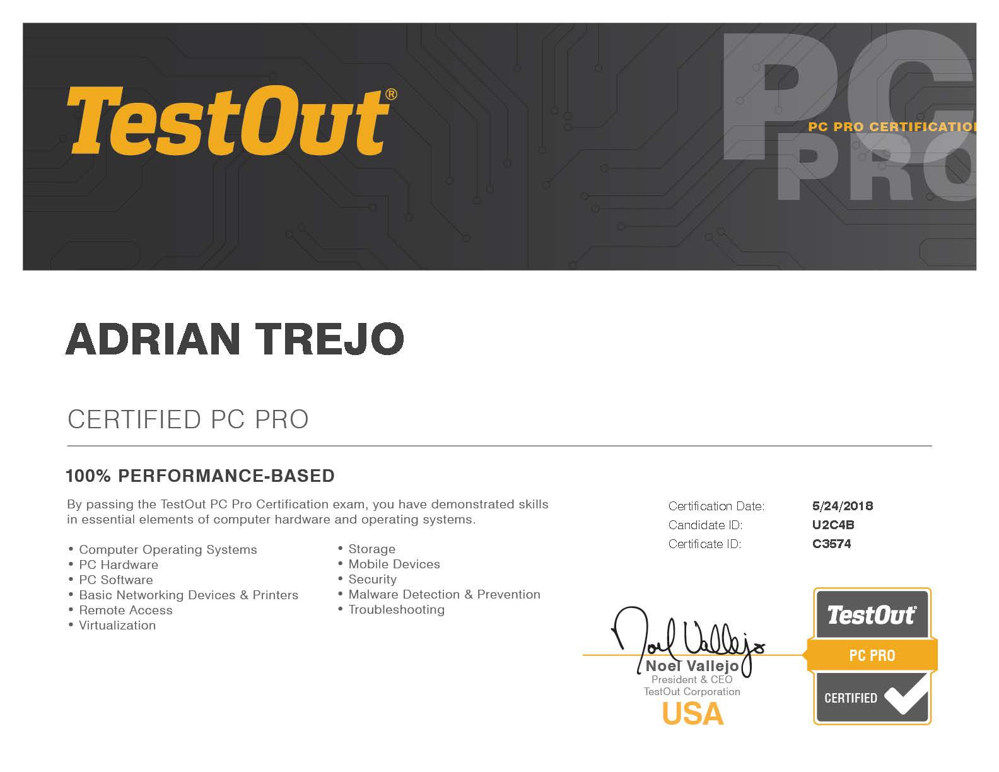

Certifications
Testout PC Pro
The TestOut PC Pro Certification is a performance-based assessment for PC hardware, software, and Windows operating system management. The exam covers content taught in the TestOut PC Pro course. Students should have completed this course (or have equivalent training and experience) before attempting this exam.
Testout Network Pro
The TestOut Network Pro Certification exam tests your ability to perform real-world tasks using the Windows operating system and common networking hardware. The exam covers content that is taught in the TestOut for Network+ course. Students should have completed this course (or its equivalent) before attempting this exam.
Example Project
The TestOut Security Pro Certification is a performance-based assessment for IT security professionals. The exam covers content that is taught in the TestOut Security Pro course. Students should have completed this course (or its equivalent) before attempting this exam.